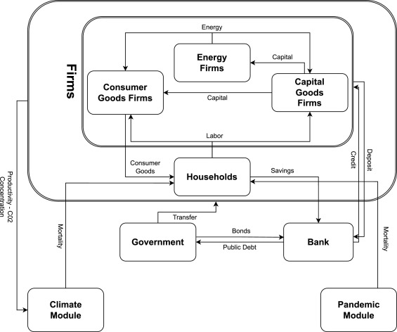
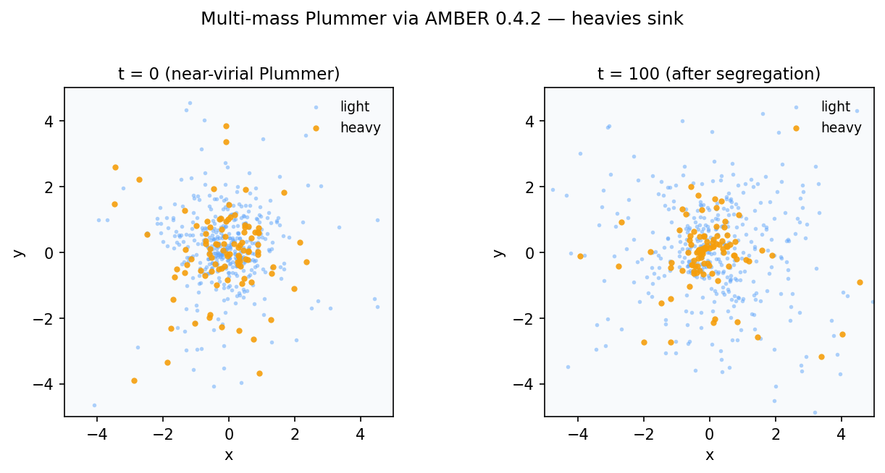

Doctoral Researcher
Julius-Maximilians-Universität Würzburg
Chair of Logistics and Quantitative Methods. Researched graph-based time series forecasting for supply chains.
Open-source columnar architecture for agent-based modelling — Polars-backed state, ~20× faster than object-per-agent baselines.
31 ready-to-model soil datasets for trustworthy ML benchmarking in digital soil mapping — published in Geoderma.
I am a machine learning researcher currently looking for an AI/ML Engineer role. As of July 2026, I concluded my role as Doctoral Researcher at the Chair of Logistics and Quantitative Methods at the Julius-Maximilians-Universität Würzburg. My research is situated at the intersection of advanced machine learning and operations management.
Specifically, I focus on graph-based time series forecasting to enable data-driven decision-making in supply chain management. I combine this with expertise in Agent-based Modelling to simulate and analyze complex economic and environmental systems.
My academic background is rooted in Generative Deep Learning and Computer Vision, having developed novel deepfake autoencoders using StyleGAN and Vision Transformers during my Master's. I have previously applied these skills to biometrics and CAE simulations at various Fraunhofer institutes.
Concluded my position at Julius-Maximilians-Universität Würzburg.
New preprint: "In-Context Learning for Data-Driven Censored Inventory Control" (with S. Mukherjee, R. Pibernik, and Y. Xu) is now on arXiv.
"Interpretable Prosumer Load Forecasting via Physics-Informed Kolmogorov-Arnold Networks" (with R.T. Derzbach, A. Dhakal, and C.M. Flath) accepted at ACM e-Energy.
Preprint of AMBER, a columnar architecture for high-performance agent-based modeling in Python, is now on arXiv.
Our paper "When pandemics meet climate risk" (with P. D'Orazio and S.H. Nguyen) is now published online in the Journal of Economic Dynamics and Control.
"Belief-Aware Inventory Control with Deep Mixture Models" (with M. Beck) presented at the NeurIPS 2025 MLxOR Workshop.
LimeSoDa, our benchmark dataset collection for digital soil mapping, published in Geoderma.
Joined the Chair of Logistics and Quantitative Methods at Julius-Maximilians-Universität Würzburg as a Doctoral Researcher.
"Evaluating climate-related financial policies' impact on decarbonization with machine learning methods" published in Scientific Reports.
Chair of Logistics and Quantitative Methods. Researched graph-based time series forecasting for supply chains.
Joint Lab Artificial Intelligence & Data Science.
Focus: Generative AI.
Biometrics.
Agent-based Economic Modeling.
Applied machine learning to computer-aided engineering (CAE) simulation data.
Electrical Engineering and Information Technology department.



Adjust two initial conditions across twenty AMBER 0.4.4 runs—and follow each chaotic system until a binary and escaper stabilize.
Read tutorial
A quiet star cluster rearranges itself — mass segregation in AMBER, after the cold collapse drama.
Read tutorial
Violent relaxation as an AMBER stress test — same physics in Mesa and AgentPy, one of them much faster.
Read tutorialWhat to expect here: tutorials on graph-based forecasting, agent-based modelling, and explainable AI — plus notes from the PhD trenches.
Read post